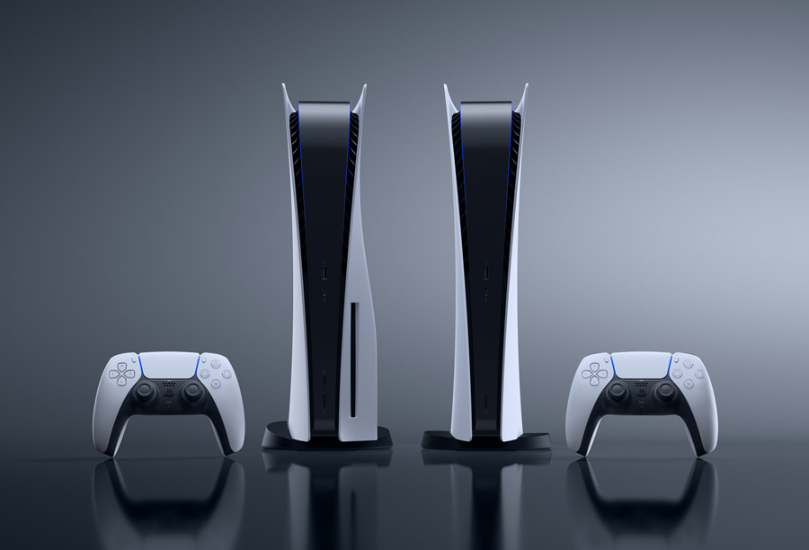
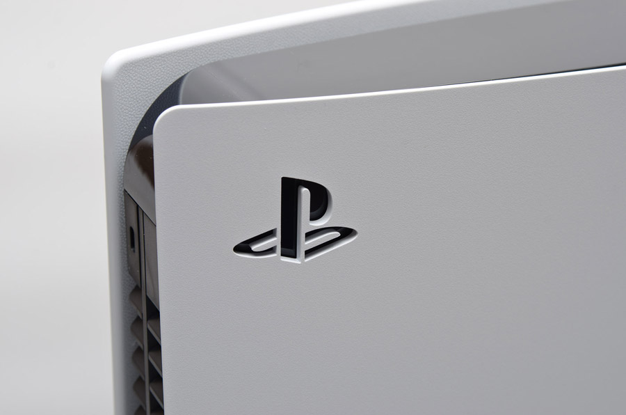
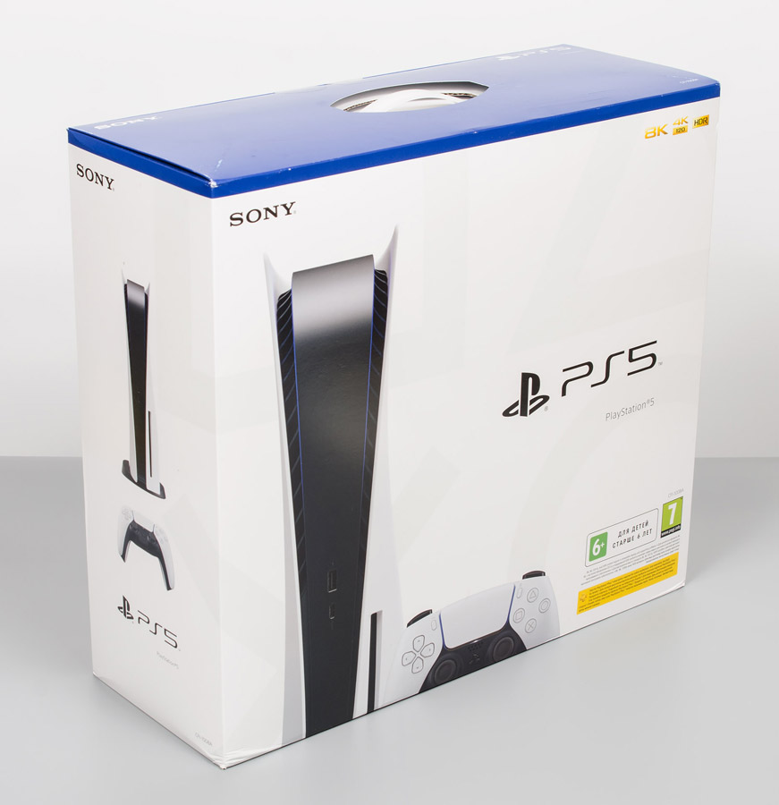
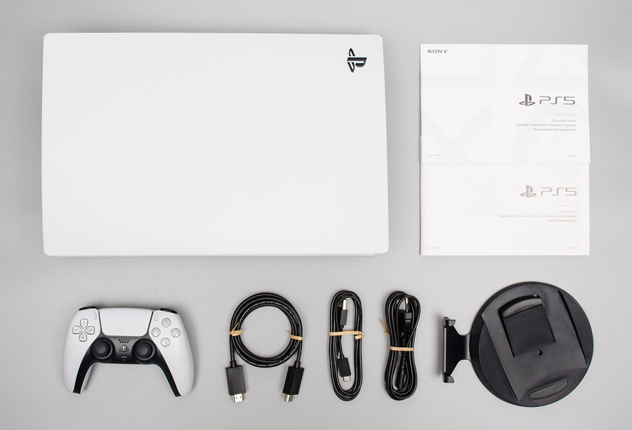
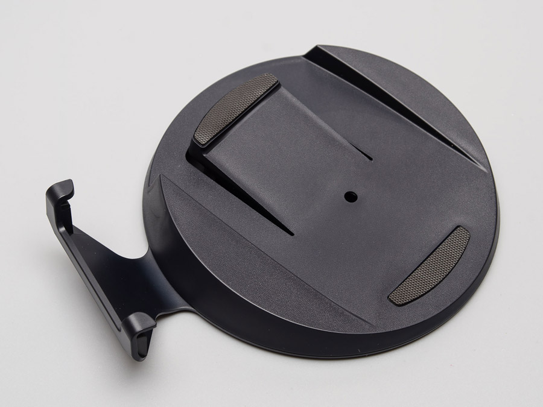
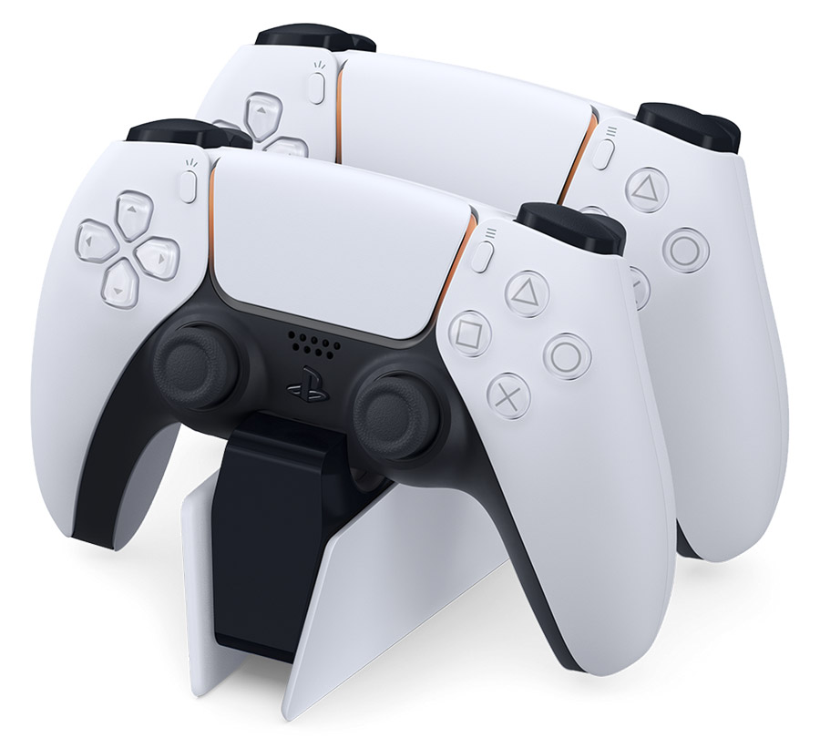
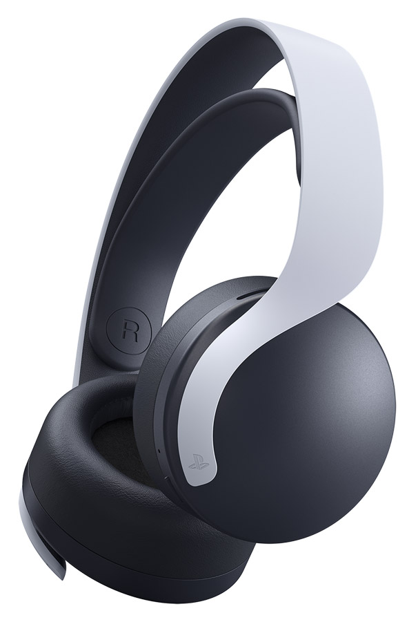
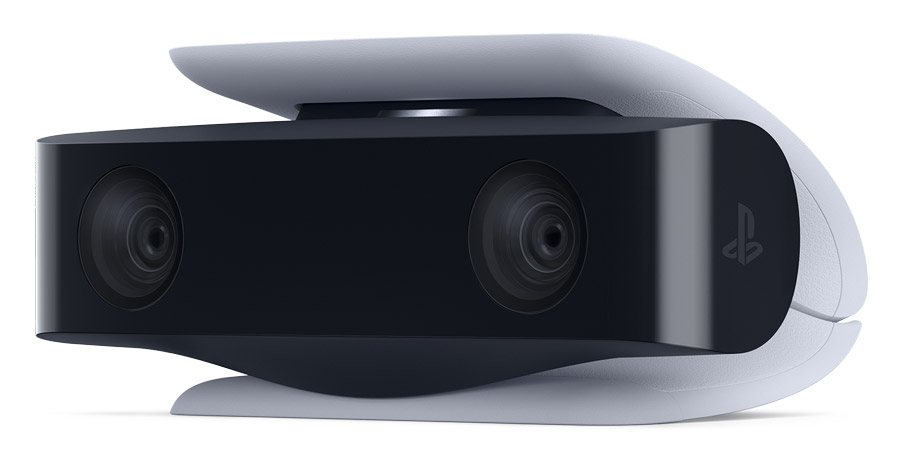
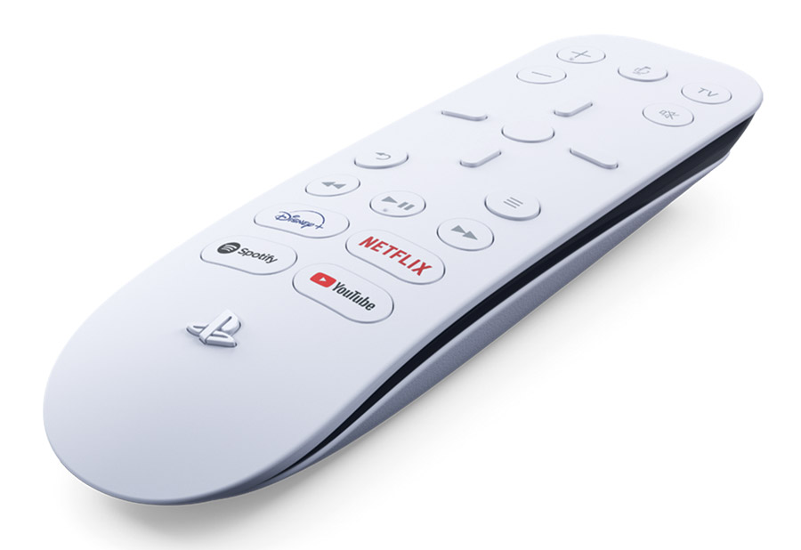

Будучи заядлыми ПК-геймерами, мы никогда не обращали внимания на консоли, но реальность такова, что часть наших читателей, родственников и друзей все чаще приобретают игровые приставки вместо очередного апгрейда своего компьютера. Кто-то же берет консоль ради эксклюзивов или просто как дополнительное устройство для телевизора с большой диагональю. Даже мы периодически знакомимся с новыми играми именно на приставке, так как это позволяет не ограничиваться возможностями имеющегося компьютера и полностью погрузиться в игровой процесс. Фактически приставка — это готовый небольшой ПК, заточенный лишь для игр и развлечений, которые позволяют неплохо провести время в кругу семьи. А последние события на компьютерном рынке лишь подстегивают интерес к консолям. Итак, приступим!
PlayStation
Словосочетание PlayStation на слуху уже более 20 лет, но корпорация Sony не всегда занимала значимое место в игровой индустрии. До начала 90-х годов японская компания снисходительно относилась к рынку видеоразвлечений, отдавая предпочтение потребительской электронике. После неудачной попытки сотрудничества с Nintendo по разработке устройства с поддержкой CD-дисков для SNES, корпорация решила выпустить свою консоль, и в 1994 году была представлена всеми известная PlayStation. Трехмерные игры на емких и недорогих компакт-дисках с возможностью воспроизведения аудио-CD — для той эпохи это было весьма впечатляюще, что и позволило Sony потеснить своих конкурентов, предлагающих устройства с дорогими и менее объемными картриджами. К слову, Nintendo до начала 2000-х так и не смогла выпустить приставку с поддержкой CD.
После триумфального старта корпорация решила не останавливаться на достигнутом и в 2000 году выпустила версию PlayStation следующего поколения, которая позволяла еще и просматривать видео на DVD, что на тот момент было редкостью даже для ПК. Появление в это время мощного и грозного соперника в лице Xbox от Microsoft предопределило дальнейшее развитие игровой экосистемы японского гиганта и вылилось в эру соперничества между этими двумя компаниями. Слабая начинка в эпоху обычных телевизоров особого дискомфорта не вызывала, но рост популярности ЖК-устройств с большим разрешением уже требовал решение помощнее, да и ПК стремительно развивались, не давая передохнуть любителям апгрейда. Разработанный совместно с IBM и Toshiba процессор Cell BE уже был способен поднять производительность консоли на новый уровень, и PlayStation 3 увидела свет в 2006 году. Что интересно, все конкурирующие на тот момент приставки были основаны на процессорах архитектуры PowerPC от IBM. И опять новая консоль предлагала расширенную функциональность в виде просмотра видео, но уже на дисках Blu-ray, а возможность запустить на ней Linux — построить небольшой суперкомпьютер из нескольких приставок! Правда, позже данную «опцию» исправили в одной из прошивок.
Но у процессоров Cell, несмотря на всю их мощь, был и серьезный недостаток, заключавшийся в сложности разработки под него игрового ПО, что явно негативно сказывалось на скорости выхода проектов и их себестоимости. Кроме того, к началу прошлого десятилетия IBM прекратила все работы над этими процессорами и Sony пришлось искать им замену. И тут на сцену выходит AMD со своими APU Jaguar — восьмиядерный процессор с переработанным графическим ядром прекрасно подходил для основы PlayStation 4. Конкурент поступает аналогичным образом, и архитектура x86-64 становится общей для приставок и ПК. К сожалению, даже это не всегда способствует беспроблемному портированию игр на компьютеры или наоборот, но, учитывая, что основным рынком для студий стал именно консольный, то страдают от плохой оптимизации обычно геймеры с обычными компьютерами.
Несмотря на постоянный выход обновленных версий (Slim, Pro) того или иного поколения консолей PlayStation, обеспечивающих более компактные размеры устройства или его более высокую производительность, они со временем все равно морально и технологически устаревают. Шесть-семь лет жизненного цикла игровых приставок и возникает необходимость их полного обновления, так как новые эксклюзивные проекты обещают более качественную графику и 120 fps в еще большем разрешении с не виданной доселе кинематографичностью лишь на решениях следующего поколения. И последнее наконец-то появилось в прошлом году с выходом PlayStation 5, которая стала таким же редким явлением на полках магазинов, как и новые серии видеокарт GeForce и Radeon.
Как видим, перед нами такой себе мощный «неттоп» в приличном корпусе, который стал даже больше, чем у PlayStation 4. Масса также выросла и это понятно, так как для нового и мощного APU старая система охлаждения явно не подходит, а установленная теперь занимает приличный объем внутреннего пространства. У конкурента дела обстоят аналогичным образом. Коммуникационные возможности вполне на современном уровне и свободно позволяют подключить все необходимое периферийное оборудование, если таковое будет, и осуществлять передачу данных, как по проводному, так и беспроводному протоколу, на приличной скорости. Теперь рассмотрим консоль и комплект поставки поближе.
Открываем коробку
Приставка поставляется в крупной коробке, выполненной в сине-белых тонах, которая для удобства переноски снабжена пластиковой ручкой. Также после покупки с ней будет удобно прогуляться по торговому центру, учитывая ее нынешний тотальный дефицит, — изображение PlayStation 5 явно привлечет к себе внимание заинтересованных лиц.
Внутри коробки консоль хорошо зафиксирована формами и накрыта сверху картонным боксом с аксессуарами, что убережет ее от повреждений при транспортировке. Хорошая предусмотрительность производителя, учитывая, что мою приставку курьерская служба явно недолюбливала, пока осуществляла ее доставку.
Вскрыв упаковку, новоиспеченный пользователь обнаружит в ней саму консоль, подставку для нее, геймпад нового поколения, кабель USB Type-C/Type-A (2 м), кабель HDMI (2 м), сетевой шнур, краткий справочник и руководство по безопасности.
Радует наличие подставки, учитывая, что ее не было у консоли второго поколения и ее необходимо было приобретать отдельно. Но здесь ее наличие продиктовано формами корпуса, из-за чего без нее будет невозможно расположить PlayStation 5 горизонтально.
Одного комплектного геймпада должно хватить для подавляющего количества проектов, а если есть желание сыграть в паре за одним экраном, придется самостоятельно позаботиться о приобретении еще одного контроллера.
Дополнительные аксессуарыВ целом, второй геймпад может быть актуален даже для одного активного геймера, когда один джойстик разрядился, а прерывать игровой процесс на время зарядки желания нет. Конечно, можно подключить комплектный USB-кабель и играть так, но его длина небольшая и ее хватит, если сидишь рядом возле монитора, но не телевизора, который расположен, например, на расстоянии 3–4 м. Для двух геймпадов будет полезна фирменная заряжающая станция, благодаря которой при зарядке можно не занимать USB-порты на приставке.
Любители полного погружения в игровой процесс могут приобрести беспроводную стерео гарнитуру Pulse 3D, оснащенную двумя микрофонами с шумоподавлением, которая сможет работать без подзарядки в активном режиме до 12 часов. С ней обещают новые аудио ощущения и качественное позиционирование звука, но поддержка технологии Tempest 3D AudioTech, благодаря которой реализуется 3D-звук, пока заявлена лишь в нескольких проектах для PlayStation 5. В будущем список соответствующих игр будет только расширяться, как и сертифицированных сторонних гарнитур, так что, приобретать Pulse 3D или нет — уже решать пользователю.
Среди дополнительных аксессуаров к новой приставке присутствует камера с разрешением Full HD и возможностью удаления фона, что должно понравиться стримерам, транслирующим свой игровой процесс и желающим присутствовать на своем видео.
Есть еще ПДУ, который позволит осуществить навигацию по мультимедиа контенту и меню приставки, а также с его помощью можно управлять совместимым телевизором. Если часто использовать консоль для просмотра того же YouTube, а не только для игр, то явно без такого устройства не обойтись.
